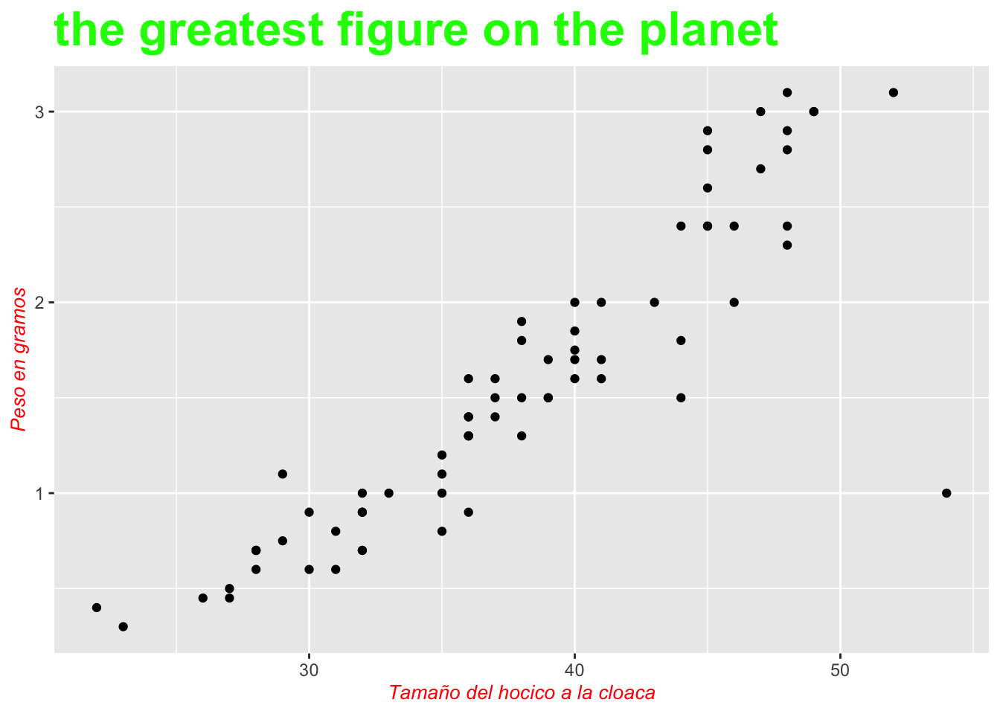

Graficos para conteos
geom_point y geom_count
La función geom_point se utiliza para gráficar los datos en forma de puntitos. Típicamente tenemos información en el eje de X y de Y, de manera que la función representa los datos distribuidos en ambos ejes.
library(ggversa) # la función "library" activa el packete de **ggversa** donde se encuentra los archivos
library(ggplot2) # ggplot2 es la librería que se usará para gráficar los datos
library(tidyverse) # una serie de packetes para organizar y visualizar los datos
library(gt) # Para que las tablas se vean más organizada
gt(head(Anolis)) # la función *head* es para visualizar las primeros 6 filas| STUDY | Survey_Site | LOCATION | TIME | DATE | SEASON | SPECIES | SEX_AGE | HEIGHT | DISTANCE_FROM_CENTERLINE | PERCH_SUBSTRATE | PERCH_DIAMETER | WEIGHT | SVL | TAIL |
|---|---|---|---|---|---|---|---|---|---|---|---|---|---|---|
| Mark/recap | North Tower | El Verde | 10:46:00 | 3/13/92 0:00 | dry | Anolis stratulus | Female | 0.0 | 2.7 | ground | 6 | NA | NA | NA |
| Mark/recap | Woods walkway tower | El Verde | 10:15:00 | 2/20/89 0:00 | dry | Anolis stratulus | Juvenil | 0.0 | 2.0 | NA | NA | NA | 29 | NA |
| Mark/recap | Woods walkway tower | El Verde | 11:15:00 | 2/21/89 0:00 | dry | Anolis stratulus | Male | 0.0 | 1.4 | on root at base | 0 | NA | NA | NA |
| Mark/recap | North Tower | El Verde | 11:06:00 | 3/16/92 0:00 | dry | Anolis stratulus | Juvenil | 0.3 | 1.0 | tower | 30 | 7.0 | 26 | 3 |
| Mark/recap | North Tower | El Verde | 12:31:00 | 3/11/92 0:00 | dry | Anolis stratulus | Male | 0.3 | 0.9 | tower | 5 | 2.4 | 45 | 71 |
| Mark/recap | North Tower | El Verde | 01:00:00 | 3/9/92 0:00 | dry | Anolis stratulus | Female | 0.4 | 0.9 | tower | 5 | 1.6 | 37 | 58 |
Primer ejemplo de geom_point
Selecionando los datos con select() y filter()
Comenzaremos con un ejemplo hecho con geom_point para después así apreciar las ventajas de geom_count. Se usará un subgrupo de los datos de unas especies de Anolis, ese pequeño lagartijo habitan es nativo de Puerto Rico. Primero se visualizan las primeras 7 filas del archivo con las dos variables de interés. Específicamente, utilizaremos los datos de los lagartos con individuos que tienen entre 4 cm y 20 cm de largo. El primer paso es seleccionar las columnas de interes usando la función select( ), el segundo paso es filtrar los datos especifico para tener los Anolis que tiene un peso menor de 4 y un SVL mayor a 20.
El el primer paso se muestran las filas del 1 al 7 usando head( ) y se seleccionan las columnas de peso de los lagartos WEIGHT con valor menor de 4 y tamaño SVL mayor a 20. Note que se utilizo & para decir que cada fila tiene que cumplir con ambas condiciones, el largartijo tiene que tener tanto un peso menor de 4 y un tamaño mayor de 20. Si una de las dos información faltaba no estará incluido en los este archivo reducido.
Anolis %>%
select(WEIGHT, SVL)%>% # selecciona
filter(WEIGHT<4 & SVL>20)%>%
head(n=7)%>%
gt()| WEIGHT | SVL |
|---|---|
| 2.4 | 45 |
| 1.6 | 37 |
| 1.4 | 36 |
| 2.0 | 43 |
| 1.8 | 38 |
| 1.1 | 35 |
| 0.7 | 28 |
Gráfico de geom_point
El gráfico basico.
En este gráfico los puntos son negros con un tamaño especifico y los monbres de las variables son el nombre de las columnas.
Anolis %>%
select(WEIGHT, SVL)%>%
filter(WEIGHT<4 & SVL>20)%>%
ggplot(aes(SVL, WEIGHT))+
geom_point()
Añadiendo detalles al gráfico.
Se cambia el nombre de las variables con xlab y ylab. El tamaño y estilo de las letras de las variables se cambia con theme(axis.title=element_text(size=10,face=“italic”, colour=“red”), añadir un titulo se con ggtitle(“the greatest figure on the planet”) y tamaño y estilo del titulo con theme(title=element_text(size=20,face=“bold”, colour=“green”)).
Anolis %>%
select(WEIGHT, SVL)%>%
filter(WEIGHT<4 & SVL>20)%>%
ggplot(aes(SVL, WEIGHT))+
geom_point()+
ylab("Peso en gramos")+
xlab("Tamaño del hocico a la cloaca")+
theme(axis.title=element_text(size=10,face="italic", colour="red"))+
theme(title=element_text(size=20,face="bold", colour="green"))+
ggtitle("the greatest figure on the planet")
En el ultimo gráfico tenemos la peculiaridad que hay múltiples lagartos con el mismo peso y tamaño, por lo que los puntos quedarán solapados. A consecuencia de esto, uno no necesariamente va a poder apreciar la frecuencia de los datos. Más adelante se demostrará cómo resolver ese problema.
geom_count
Por otro lado, la función geom_count varía el tamaño de los puntos de acuerdo a como cambia el tamaño con relación a una variable. Esta función es una extensión de geom_point. Con geom_count veremos que la diferencia es que ahora el tamaño de los puntos está relacionado a su frecuencia en el archivo de datos. El tamaño de cada punto representa valores que cuando son pequeños es que son menos frecuentes la cantidad de lagartijos que tienen esta frecuencia en el archivo de datos y los más grandes es que son más comunes. Esto se demuestra en la figura a continuación:
Anolis %>%
select(WEIGHT, SVL)%>%
filter(WEIGHT<4 & SVL>20)%>%
ggplot(aes(SVL, WEIGHT))+
geom_count()+
ylab("Peso en gramos")+
xlab("Tamaño del hocico a la cloaca")+
theme(axis.title=element_text(size=14,face="bold"))
El tamaño de los puntos proporcional a su frecuencia
Proporción considerando todos los datos
En el gráfico siguiente los tamaños de los puntos están proporcionales a su frecuencia. Note que hay que añadir (size=..prop.. y group=1) en la función geom_count(). Note que en este caso la suma de todas las frecuencias es 1. Vemos que, al contrario de la Figura anterior, ahora los puntos salen en proporción a la frecuencia.
Anolis %>%
select(WEIGHT, SVL)%>%
filter(WEIGHT<4 & SVL>20)%>%
ggplot(aes(SVL, WEIGHT))+
geom_count(aes(size=..prop.., group=1))+
ylab("Peso en gramos")+
xlab("Tamaño del hocico a la cloaca")+
theme(axis.title=element_text(size=10,face="bold"))
Proporción considerando todos la variable en “x”
En el siguiente gráfico, una de las variables, WEIGHT o peso del lagartijo, se usa para que la suma de la proporción equivalga a 1. Entonces aquí cada grupo de {Y} suma a 1. Nota que los grupos son el tamaño del hocico a la cloaca (SVL) geom_count(aes(size=..prop.., group=SVL)). Por ejemplo, en los Anolis que tiene el tamaño de 35 hay 4 puntos de valor de 0.25 que da una suma de 1.
Anolis %>%
select(WEIGHT, SVL)%>%
filter(WEIGHT<4 & SVL>20)%>%
ggplot(aes(SVL, WEIGHT))+
geom_count(aes(size=..prop.., group=SVL))+
ylab("Peso en gramos")+
xlab("Tamaño del hocico a la cloaca")+
theme(axis.title=element_text(size=14,face="bold"))
Seperando factores por color
Si hay más de un grupo, se puede ver la proporción basada en los grupos/factores usando la función colour o color. Aquí, vemos el efecto de usar el color, y del patrón uno observa que la mayoría de los pequeños Anolis se observa en el periodo lluvioso y los grandes en el periodo seco. Nota que aquí se añade la variable que quisieramos que fuese separado por color. Se uso la estación de tiempo seco o húmedo en la columna Season.
Anolis %>%
select(WEIGHT, SVL, SEASON)%>%
filter(WEIGHT<4 & SVL>20)%>%
ggplot(aes(SVL, WEIGHT, colour=SEASON))+
geom_count(aes(size=..prop.., group=WEIGHT))+
ylab("Peso en gramos")+
xlab("Tamaño del hocico a la cloaca")+
theme(axis.title=element_text(size=10,face="bold"))
Facet_wrap
En la siguiente demostración, se separan los gráficos de acuerdo al sitio de muestreo usando facet_wrap y añadiendo en aes( group=la variable). facet_wrap se explica en detalle más adelante. Aquí se observa que el muestreo en el sitio llamado Torre Sur fue hecho solamente en el periodo lluvioso. Note que para crear los dos gráficos separados por una variable discreta se usa facet_wrap con una tilde, “~” seguido del nombre de la variable, que en este caso es la localidad de muestreo, survey_Site.
names(Anolis) # this gives me the names of columns## [1] "STUDY" "Survey_Site"
## [3] "LOCATION" "TIME"
## [5] "DATE" "SEASON"
## [7] "SPECIES" "SEX_AGE"
## [9] "HEIGHT" "DISTANCE_FROM_CENTERLINE"
## [11] "PERCH_SUBSTRATE" "PERCH_DIAMETER"
## [13] "WEIGHT" "SVL"
## [15] "TAIL"Anolis %>%
select(WEIGHT, SVL, SEASON, Survey_Site)%>%
filter(WEIGHT<4 & SVL>20)%>%
ggplot(aes(SVL, WEIGHT, colour=SEASON))+
geom_count(aes(size=..prop.., group=WEIGHT))+
ylab("Peso en gramos")+
xlab("Tamaño del hocico a la cloaca")+
facet_wrap(~Survey_Site)+
theme(axis.title=element_text(size=10,face="bold"))+
theme(plot.title = element_text(colour = "dark green", face = "bold", size = 20, hjust = 1))+
scale_color_manual(values = c("orange", "dodger blue"))
Cambio en la forma de puntos con shape
Para el siguiente, se cambia la forma de los puntos con shape. La opción de shape es para modificar los tipos de símbolos disponibles. (Vea la Figura ref{fig:PlotSimbolos} para notar la variedad de símbolos disponibles.) Los números de los símbolos van de 0 a 25, y solamente los números 21 al 25 son símbolos rellenados con color, lo que se hace al utilizar la opción de fill. El símbolo típicamente utilizado en los gráficos de ggplot2 es el 16 (un punto). Aquí cambiamos del símbolo 16 al 1.
Anolis %>%
select(WEIGHT, SVL, SEASON, Survey_Site)%>%
filter(WEIGHT<4 & SVL>20)%>%
ggplot(aes(SVL, WEIGHT, colour=SEASON))+
geom_count(shape=11,fill="yellow",colour="black",
aes(size=..prop.., group=Survey_Site))+
ylab("Peso en gramos")+
xlab("Tamaño del hocico a la cloaca")+
facet_wrap(~Survey_Site)+
theme(axis.title=element_text(size=10,face="bold"))
Cambio en el grosor de la linea alrededor de los puntos
En el siguiente gráfico, se cambia la forma del punto a un triángulo con el parámetro shape =22 y el grosor de la línea del triángulo con el parámetro stroke. El parámetro stroke es para modificar el grosor de la línea alrededor del punto.
Anolis %>%
select(WEIGHT, SVL, SEASON, Survey_Site)%>%
filter(WEIGHT<4 & SVL>20)%>%
ggplot(aes(SVL, WEIGHT, colour=SEASON))+
geom_count(shape= 22, stroke=2,
aes(size=..prop.., group=Survey_Site))+
ylab("Peso en gramos")+
xlab("Tamaño del hocico a la cloaca")+
facet_wrap(~Survey_Site)+
theme(axis.title=element_text(size=10,face="bold"))
Opciones y Parametros de geom_count
A continuación se resumen las opciones y parámetros más importantes de geom_count:
ggplot(el archivo de datos, aes(x= la variable secuencial, y = la variable secuencial más de un grupo, color= si hay necesidad))
geom_count(x, y, alpha, colour, fill, shape, size, stroke)
- alpha: la intensidad de los colores (explicado más adelante)
- colour: color de las líneas
- fill: para rellenar de color
- shape: la forma de los puntos
- size: el tamaño de los puntos
- stroke: para cambiar el grosor del borde del punto